Gallery
Research, theatre, and moments along the way.
01Research
Regeneron ISEF · TXSEF · Broad Institute · KDD

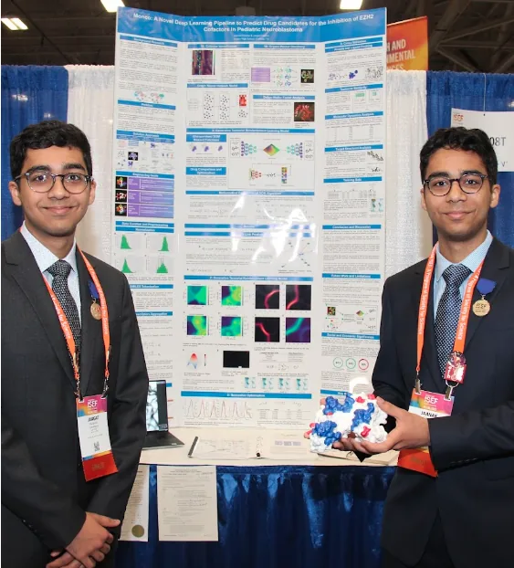

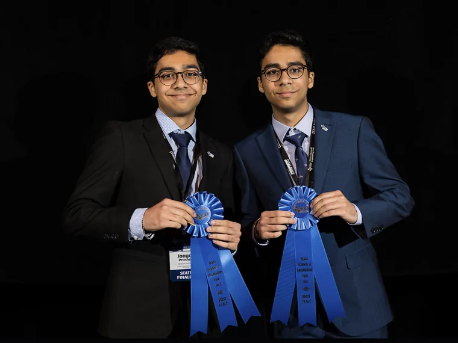

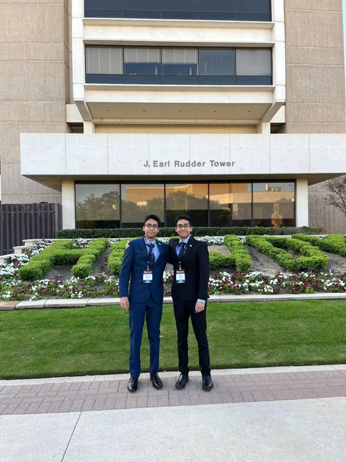

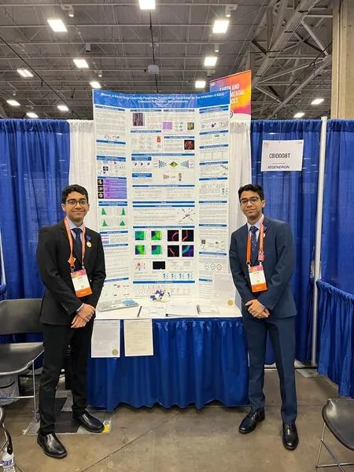

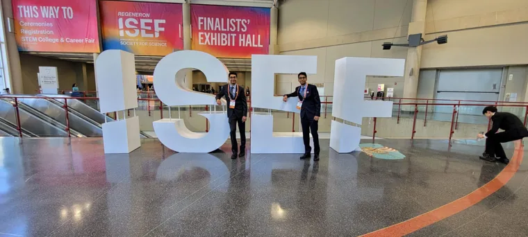

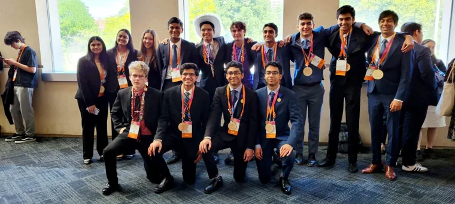


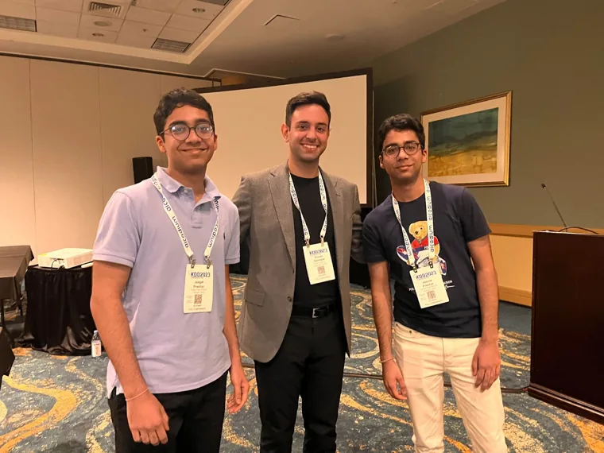

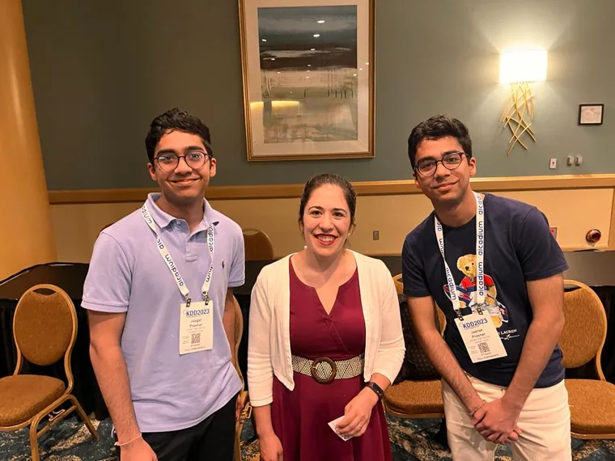

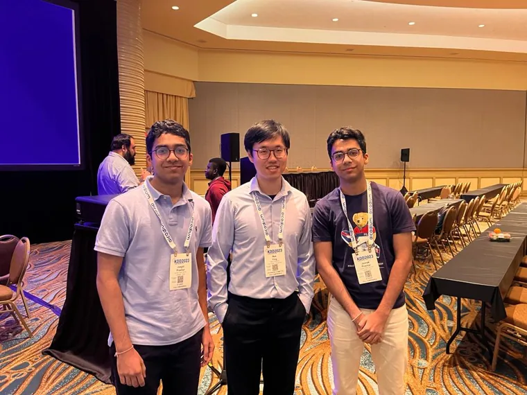

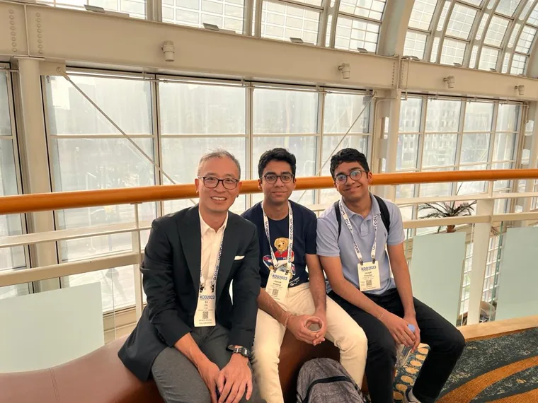

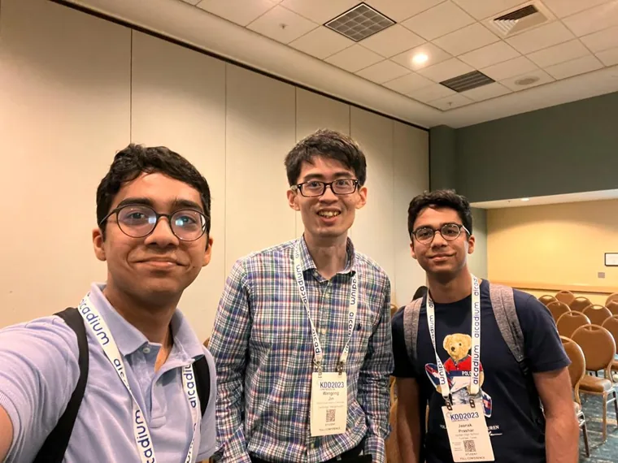
02Theatre
On stage, behind the scenes & arts advocacy

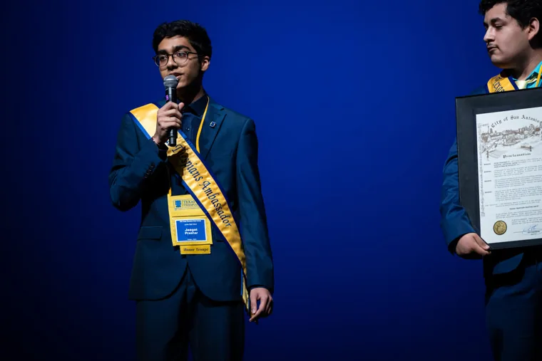

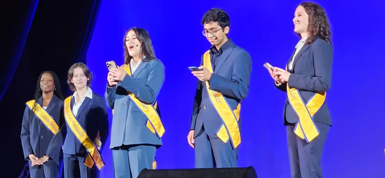

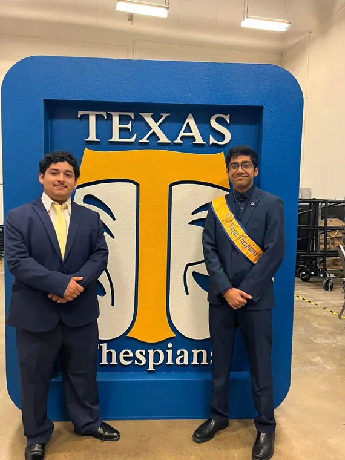

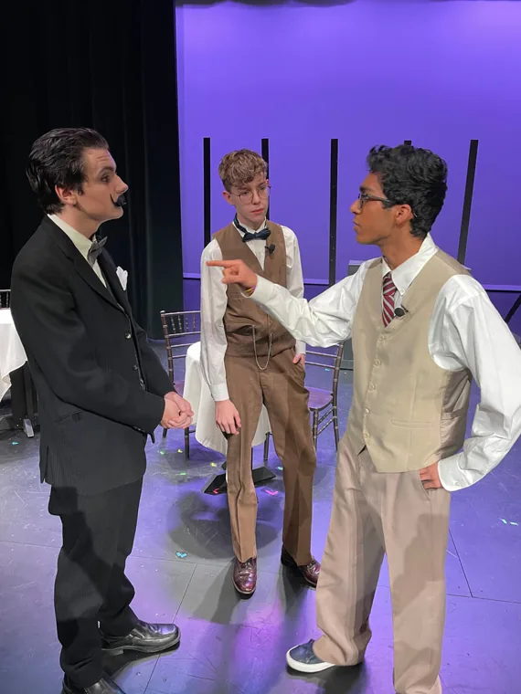

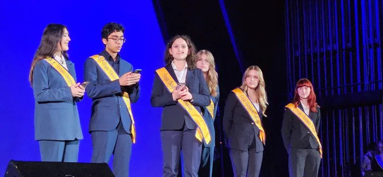

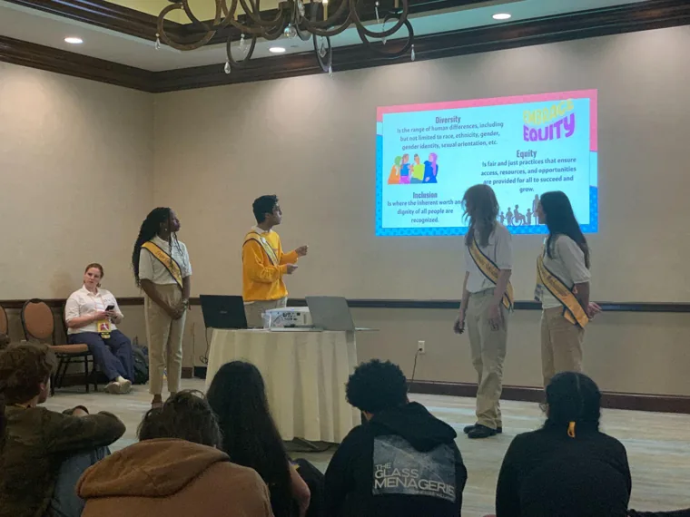


03Community
UNICEF Child Friendly City Initiative · Houston